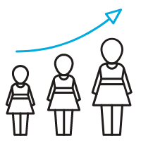

-
2016.02.15
国务院《关于加强农村留守儿童关爱保护工作的意见》，随后“留守儿童”问题又被写入了国家“十三五”规划纲要
-
2016.05.25
国家卫生计生委印发《关于做好农村留守儿童健康关爱工作的通知》
-
2016.12.05
四川省印发《关于进一步加强农村留守儿童关爱保护工作的实施意见》
-

2017.10.18
实施乡村振兴战略，是中共十九大为解决农村问题、决战全面建成小康社会而提出的战略。
-

2018.01.31
民政部发布《关于开展全国农村留守儿童关爱保护和困境儿童保障示范活动的通知》,要求建立一批全国农村留守儿童关爱保护和困境儿童保障示范区,进一步关怀农村留守儿童的成长
-

2018.09.17
四川省制定出台《2018年至2020年儿童关爱保护保障工作各成员单位主要工作要点
-
2018.10.17
《中国留守儿童心灵状况白皮书》发布,根治留守问题可先从“治标”做起
-

2019.01.31
四川省2019年开展元旦春节期间农村留守儿童困境儿童关爱保护保障工作
-
2020.05.30
民政部组织开展全国农村留守儿童和困境儿童关爱保护“政策宣讲进村(居)”活动
-
2020.06.25
四川省开展农村留守儿童和困境儿童关爱保护“政策宣讲进基层”活动
-
2021.02.21
中央一号文件再次强调应当提升农村基本公共服务水平，加强对农村留守儿童及困境儿童的关爱服务。
-
2021.12.29
四川省出台《四川妇女发展纲要（2021—2030年）》、《四川儿童发展纲要（2021—2030年）》
-
2022.01.04
《中共中央、国务院关于做好2022年全面推进乡村振兴重点工作的意见》中提出:健全基层党员、干部关爱联系制度，经常探访空巢老人、留守儿童、残疾人
-
2023.01.03
国务院未成年人保护工作领导小组办公室开展“情暖新春 共护未来”2023年寒假春节期间困境儿童关爱服务活动